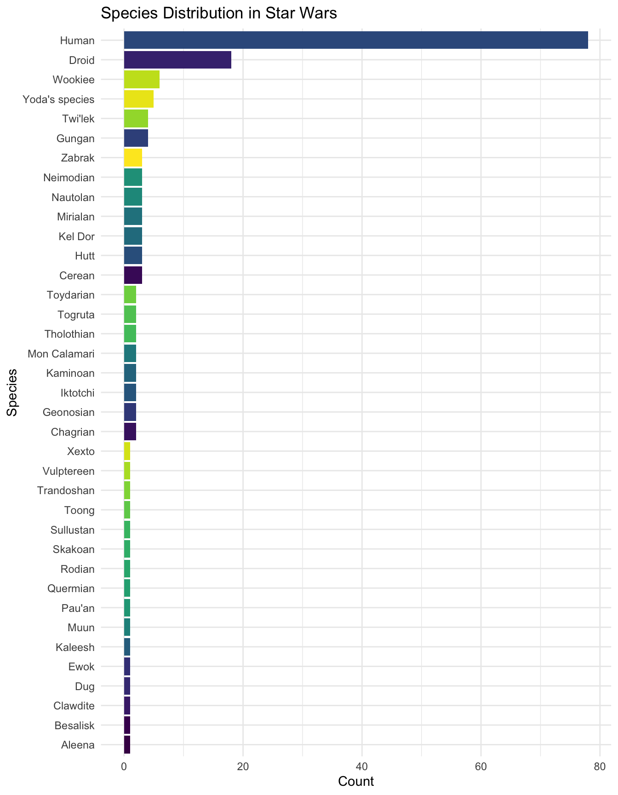
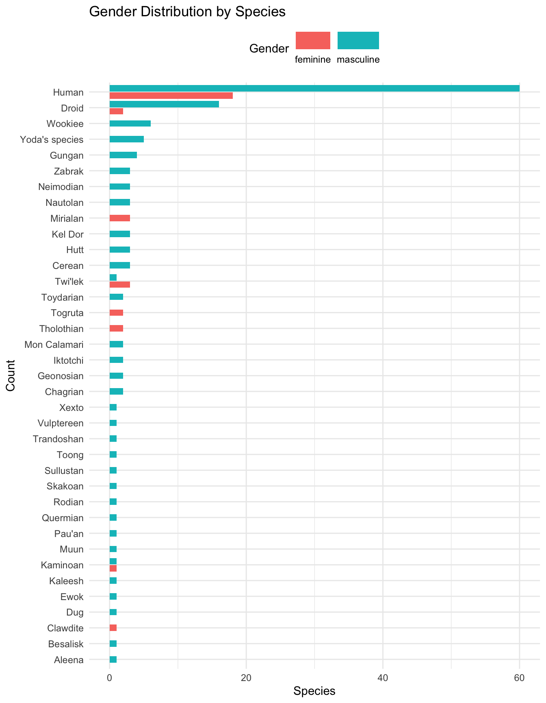
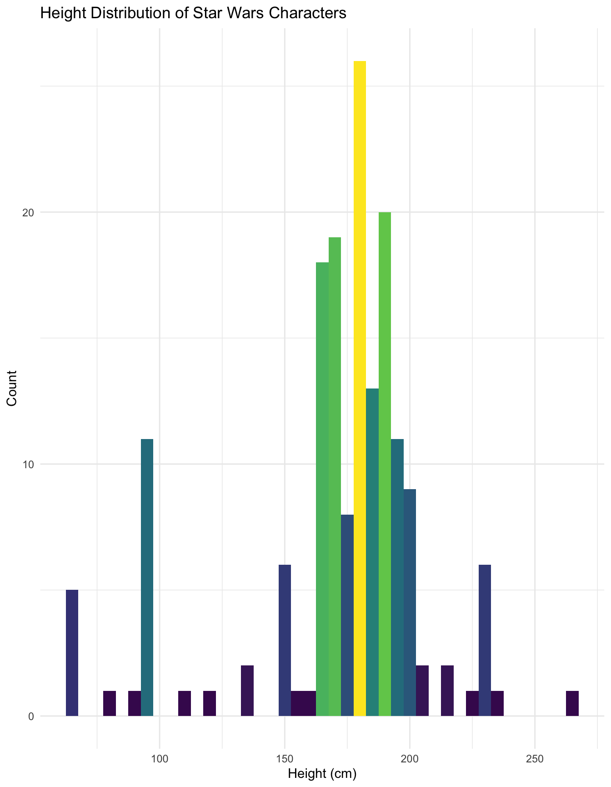
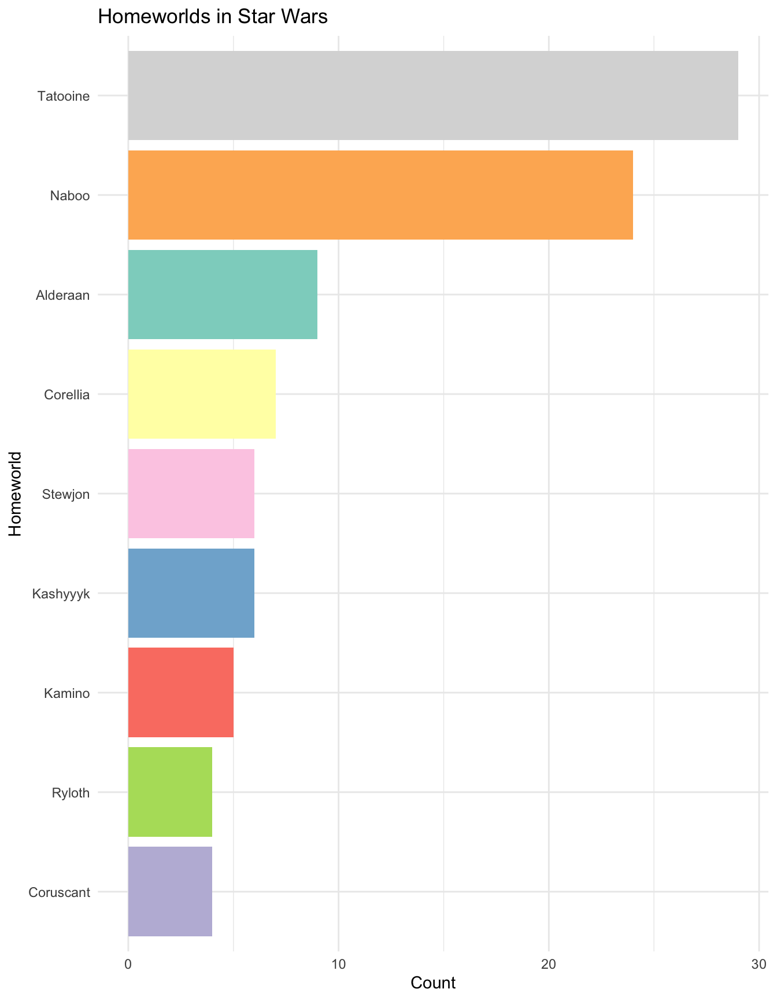

Code
library(tidyverse)
# Load the dataset
starwars_data <- read_csv("https://bcdanl.github.io/data/starwars.csv")Byeong-Hak Choe
February 4, 2024
February 4, 2024
The Star Wars saga, spanning decades of films, series, and an expansive lore, has introduced us to an incredibly diverse array of characters, each contributing to the rich tapestry of its universe. But what can data tell us about these characters and their world? Leveraging the starwars.csv dataset, this blog post embarks on a data-driven exploration, uncovering insights and patterns through the lens of the R tidyverse.
Our journey begins with the basics—loading the dataset and getting a sense of its structure:
With the data loaded, we find that it encompasses various attributes of Star Wars characters, including but not limited to their names, species, heights, weights, and allegiances. The diversity in species and homeworld paves the way for intriguing analyses.
starwars data.frameThe following describes the variables in the starwars data.frame.
films List of films the character appeared in
name Name of the character
species Name of species
height Height (cm)
mass Weight (kg)
hair_color, skin_color, eye_color Hair, skin, and eye colors
birth_year Year born (BBY = Before Battle of Yavin)
sex The biological sex of the character, namely male, female, hermaphroditic, or none (as in the case for Droids).
gender The gender role or gender identity of the character as determined by their personality or the way they were programmed (as in the case for Droids).
homeworld Name of homeworld
| Name | starwars_data |
| Number of rows | 173 |
| Number of columns | 12 |
| _______________________ | |
| Column type frequency: | |
| character | 9 |
| numeric | 3 |
| ________________________ | |
| Group variables | None |
Variable type: character
| skim_variable | complete_rate | min | max | empty | n_unique | whitespace |
|---|---|---|---|---|---|---|
| films | 1.00 | 10 | 23 | 0 | 7 | 0 |
| name | 1.00 | 3 | 21 | 0 | 87 | 0 |
| species | 0.97 | 3 | 14 | 0 | 37 | 0 |
| hair_color | 0.90 | 4 | 13 | 0 | 12 | 0 |
| skin_color | 1.00 | 3 | 19 | 0 | 31 | 0 |
| eye_color | 1.00 | 3 | 13 | 0 | 15 | 0 |
| sex | 0.97 | 4 | 14 | 0 | 4 | 0 |
| gender | 0.97 | 8 | 9 | 0 | 2 | 0 |
| homeworld | 0.91 | 4 | 14 | 0 | 48 | 0 |
Variable type: numeric
| skim_variable | complete_rate | mean | sd | p0 | p25 | p50 | p75 | p100 | hist |
|---|---|---|---|---|---|---|---|---|---|
| height | 0.97 | 171.31 | 35.58 | 66 | 167 | 178 | 188 | 264 | ▂▁▇▅▁ |
| mass | 0.79 | 101.97 | 190.62 | 15 | 55 | 77 | 84 | 1358 | ▇▁▁▁▁ |
| birth_year | 0.66 | 108.86 | 193.59 | 8 | 33 | 52 | 82 | 896 | ▇▁▁▁▁ |
Our first foray into the galaxy’s demographics involves understanding the distribution of species and gender among the characters.
# Species distribution
starwars_data |>
filter(!is.na(species)) |>
group_by(species) |>
summarise(count = n()) |>
ggplot(aes(x = reorder(species, count), y = count, fill = species)) +
geom_col(show.legend = F) +
coord_flip() +
labs(title = "Species Distribution in Star Wars",
x = "Species",
y = "Count") +
theme_minimal() +
scale_fill_viridis_d()
This visualization reveals the prevalence of humans in the Star Wars universe, followed by a fascinating variety of alien species. Each species brings its unique culture and story to the narrative, enriching the saga’s diversity.
# Gender distribution by species
starwars_data |>
filter(!is.na(gender)) |>
group_by(species, gender) |>
summarise(count = n()) |>
ggplot(aes(y = reorder(species, count), x = count, fill = gender)) +
geom_bar(stat = "identity", position = position_dodge2(preserve = "single")) +
guides(fill = guide_legend(label.position = "bottom",
keywidth = 2,
nrow = 1)) +
theme_minimal() +
labs(title = "Gender Distribution by Species",
x = "Species",
y = "Count",
fill = "Gender") +
theme(legend.position = "top")
Moving from demographics, we explore physical characteristics, starting with character heights. This analysis could reveal whether heroes and villains differ significantly in stature.

The histogram of character heights may show a broad range, reflecting the diversity of the Star Wars universe, from towering Wookiees to diminutive droids.
Another compelling aspect of the Star Wars saga is the clear delineation between factions, such as the Rebellion and the Empire. Analyzing characters’ homeworld provides a window into the narrative’s structure.
# homeworld distribution
starwars_data |>
filter(!is.na(homeworld)) |>
group_by(homeworld) |>
summarise(count = n()) |>
filter(count > 3) |>
ggplot(aes(x = fct_reorder(homeworld, count), y = count, fill = homeworld)) +
geom_col(show.legend = F) +
coord_flip() +
labs(title = "Homeworlds in Star Wars",
x = "Homeworld",
y = "Count") +
theme_minimal() +
scale_fill_brewer(palette = "Set3")
This bar chart reveals not just the quantity of characters associated with major factions like the Rebel Alliance, the Galactic Empire, the Jedi Order, or the Sith, but also the lesser-known groups that play crucial roles in the galaxy’s balance of power. The visualization demonstrates the narrative’s rich backdrop, where allegiances define character motivations, actions, and, ultimately, their fates.
Such a distribution also prompts us to consider the narratives from a broader perspective—how do these allegiances influence the storyline? Do characters within the same faction share similar traits or destinies? This opens up a deeper analysis of themes like loyalty, betrayal, and redemption that run through the Star Wars saga.
Our journey through the Star Wars universe, guided by data, reveals not just the diversity and complexity of its characters but also the intricate web of relationships, conflicts, and themes that make the saga enduringly compelling. From the demographics of species and gender to the allegiances that define the galaxy’s political landscape, and the mystical underpinnings of the Force, our analysis has uncovered patterns and raised questions that deepen our appreciation of the Star Wars narrative.
This exploration also highlights the power of data visualization in uncovering insights and telling stories. Each chart and graph has provided a different lens through which to view the data, offering a new understanding of the Star Wars universe.
While we’ve only scratched the surface of what’s possible with the starwars.csv dataset, the potential for further analysis is vast. Future explorations could delve into relationships between characters, the impact of different directors and writers on the portrayal of characters, or how the Star Wars universe has evolved over time.
As we conclude this data-driven journey, we’re reminded of the depth and breadth of the Star Wars saga—a testament to its creators and the community that keeps it alive. Whether through data analysis, storytelling, or simply enjoying the saga, the exploration of this galaxy far, far away continues to offer endless possibilities for discovery and insight.